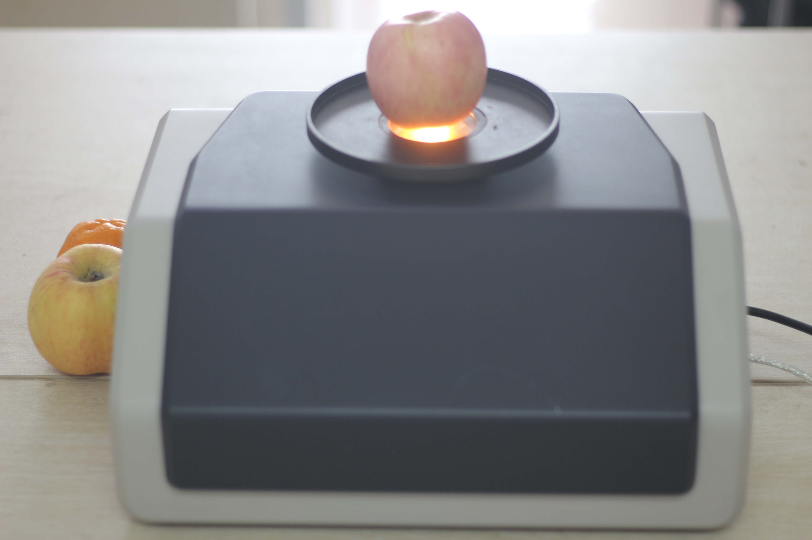
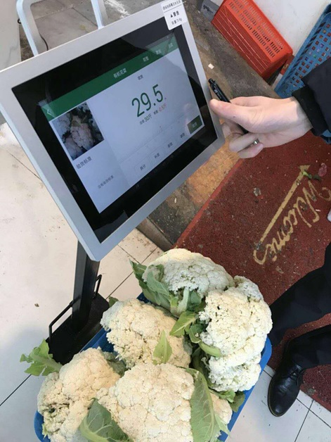
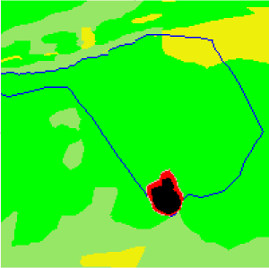

Research on Near Infrared Spectrum Data Intelligent Analysis and Multi-dimensional Feature Modeling Algorithm under Cloud Environment
National Nature Science Fund Project, China
Used near-infrared spectrometer and chemical analysis to collect nearly 10,000 spectral data.
Used Deep Learning to optimize traditional near-infrared spectroscopy detection and set up innovative food quality inspection system for improving quality and safety of the catering industry.
Acquired a software copyright as first author.
03/2018 - present
Deputy Leader

Research on Canzhi Food Materials Image Recognition
The group manually cleaned 30,000 pieces of food materials images and created a data set containing 51 types of food materials, unopened bags, and dirty pictures.
Used multi-task learning, business information such as the type and weight of food materials in the order to improve the CNN model, the recognition accuracy of 51 types of food materials was as high as 99%.
Settled down the research framework, scheduled for the team.
01/2017 - 02/2018
Project Leader

Forest Fire Prediction and Introduction of Fire Fighting Resource Scheduling Technology
948 project of the State Forestry Administration, China
Used 3D spherical cell space to improve the 2D cell space, and improved the cellular automaton algorithm by multi-objective genetic algorithm, so as to improve the prediction accuracy of the forest fire spread model.
Delivered an academic exchange report with the research team of the System Modeling and Simulation Laboratory of the Georgia State University in the United States.
01/2015 - 06/2016
Assistant Researcher